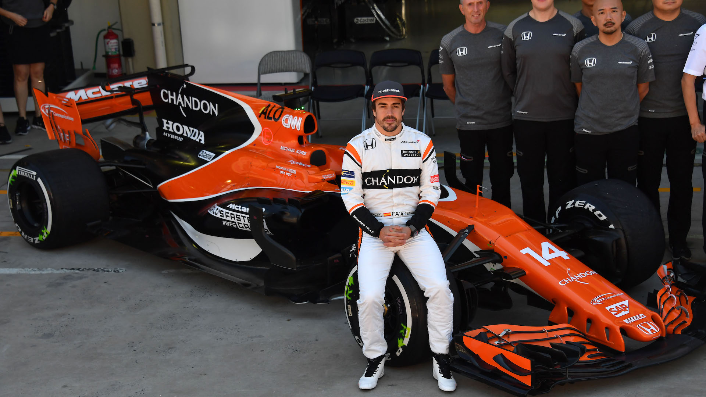

Más sobre Fernando Alonso:
La escudería European Minardi lo confirmó como uno de sus dos pilotos oficiales para el campeonato mundial 2001 de Fórmula 1. Sustituyó a Jenson Button como piloto oficial del equipo Renault completando así la pareja de pilotos de la escudería francesa junto a Jarno Trulli. El 24 de marzo de 2003 logró su primer podio al terminar tercero en el Gran Premio de Malasia, segunda prueba de la temporada, disputada en el circuito de Sepang, en la que se impuso el finlandés Kimi Raikkonen (McLaren). El 24 de agosto de 2003, en Hungaroring, se convertía en el piloto más joven en ganar un Gran Premio de Fórmula 1. Ya estaba instalado en la élite y no hizo más que rubricarlo en 2004, donde luchó con los grandes de tú a tú para ser cuarto en el Mundial de pilotos, con 59 puntos. En gran parte, todo este éxito vino dado gracias a Flavio Briatore, el jefe de escudería de ese momento de Renault.
El 25 de septiembre de 2005, y a sus 24 años, el asturiano se convirtió en el campeón más joven de la historia de la Fórmula 1. Su tercer puesto en el Gran Premio de Brasil le permitió ganar el Mundial, el primer español en conseguir el título.
En Renault, disputó un total de 7 temporadas, que le valieron 2 campeonatos mundiales (2005 y 2006), además de 17 victorias en grandes premios, 15 poles y 41 podios, números envidiables. El asturiano tocó el techo en los años 2005 y 2006, en los que fue campeón mundial de manera consecutiva y batiendo varios récords. En otros, se convirtió en el campeón del mundo de Fórmula 1 más joven de la historia
Fernando Alonso corrió para McLaren en la temporada 2007, cuando el equipo era motorizado por Mercedes, y otra vez volvió a correr en McLaren entre 2015 y 2018, cuando el motor corría a cargo de Honda. Un total de 5 temporadas con la escudería británica. El asturiano sumó 4 victorias en su primera etapa en 2007, cuando acabó tercero en el Mundial de Pilotos; sin embargo no logró ninguna victoria en su segundo periplo con McLaren, donde las cosas no marcharon bien. Un total de 95 carreras.
Con Ferrari, en su primera temporada, Alonso ganó 5 carreras y rindió a un gran nivel, pero un intratable Sebastian Vettel se haría con el mundial por solo 4 puntos, dejando a Alonso con el subcampeonato mundial y la miel en los labios. El año 2014 fue el último de unión entre Alonso y Ferrari. El español finalizó en sexto lugar con 161 puntos, y muy alejado de los primeros clasificados, lo que hizo que ambas partes buscaran nuevos caminos.

Fernando Alonso vive una segunda juventud en la F1 con su aventura en Aston Martin. De un fichaje inesperado -y que generaba dudas, al mejor movimiento deportivo de la carrera del Nano en el 'Gran Circo'. Alonso busca la 33 con el equipo verde en un Mundial 2023 marcado por la superioridad de Red Bull, pero la ilusión en Aston Martin es enorme. Acompañan a Fernando con un equipo implicado y lleno de talento, cuyo objetivo es seguir llenando la vitrina de trofeos.